Color by Numbers
Priya Kattappurath (psk92) and Maia Mahanti (mm2563)
ECE 5725 Spring 2021 Final Project
ECE 5725 Spring 2021 Final Project
This project uses images that are uploaded to the Raspberry Pi to create shape outlines that a user can “color in” though touch screen presses on the PiTFT or VNC. The user can select an image, switch between coloring modes, and save their final creation. There is a traditional color by number mode, where the colors are predefined by the original image. And there is a free color mode, where the user can fill shapes with any color. This project uses OpenCV and Pygame for image processing, image display, and user interaction.
This project implemented a color by number game on the Raspberry Pi using a PiTFT screen. Using the touchscreen, users were able to select an image, which was then processed using openCV. Once the image processing was complete, an outline of the image would be displayed on a blank screen. When a user pressed a pixel on the PiTFT, pygame was used to determine which shape the user was pressing and display a selection of colors for the user to choose from. Different modes allowed the user to choose whether to color the picture using the original image colors as guidance (color by number) or to color the picture using any color they wanted (free color). The user could also switch between four images and save their work of art to the Raspberry Pi upon completion.
The first step of our project was to download a precompiled openCV library. We followed the OpenCV install guide from Professor Skovira. We were able to install openCV version 3.2.0 using the following commands:
sudo apt-get install libopencv-dev python-opencv
sudo apt-get install python-opencv
sudo apt-get install python-scipy
sudo apt-get install ipython
Once we had sample images uploaded on the Raspberry Pi, we then wanted to differentiate the shapes inside the image for the user to color. OpenCV has a built-in function that is able to find the outline of shapes, called contours, in a binary image. Because the uploaded images are colored and not binary, the first task was to separate the image by color and create a series of binary images so that the contours could be found. This meant creating different masks of the image corresponding to different color ranges. Because openCV reads images in the Blue Green Red (BGR) color space by default, the first thing we had to do was change the color space of the image to the Hue Saturation Value (HSV) color space in order to create masks of a specific color range. The function used to create a mask around a specific color range, cv2.inRange(), required an HSV image, the low HSV values, and the high HSV values.
The next step of finding the masks for each color range was to define the color ranges that the masks were to be created from. For our initial test, we started with a simple image that we created using photopea with only three colors (see figure 1). We used a basic color converter to find example HSV ranges around the pure red, blue, and green colors used. An example of the gradient range chosen for red is given in figure 2. While most HSV values are listed as a degree (H) or a percentage (S and V), it is important to note that openCV required the hue (H) to be in the range of 0 and 180, and the saturation and value (S and V) parameters to be in the range of 0 and 255. Then a mask for each color was created (see figure 3). We were able to test our implementation of mask separation and image processing using cv2.imshow() followed by cv2.waitKey(0).
Fig 1: Simple Sample Image 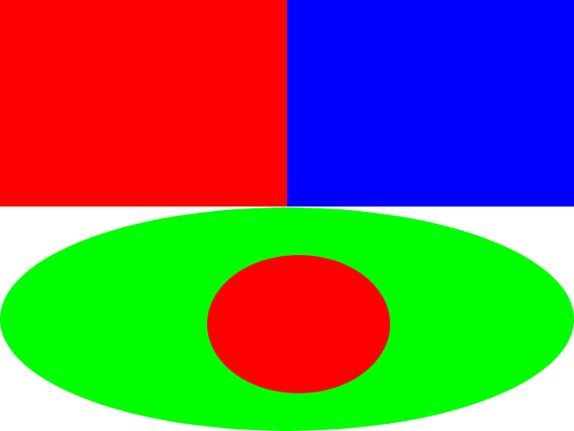
Fig 2: HSV Low Value, Color range and High value for making a red mask 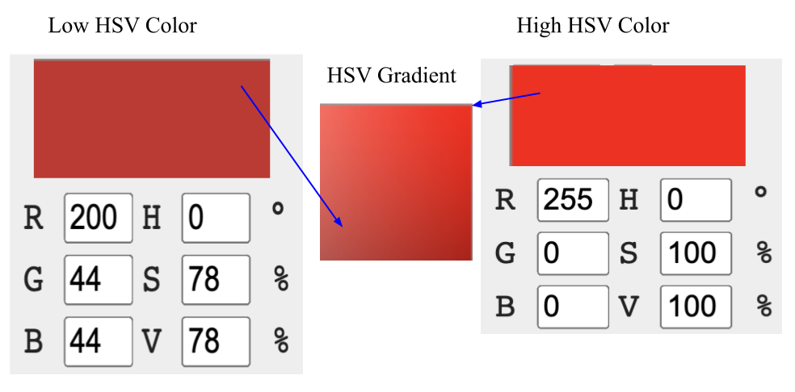
Fig 3: Mask for Color Red 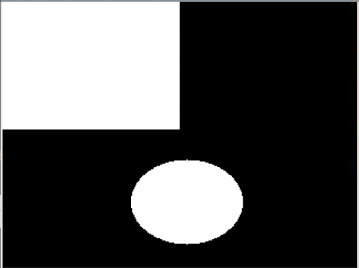
Once the color masks were created, the contours of each mask are then ready to be found. The inputs that we used for the cv2.findContours() function was a single mask image of a color range, the contour retrieval mode, and the contour approximation method. We used the mode cv2.RETR_TREE, which allows the function to return all of the contours in the mask image. And we used the approximation method cv2.CHAIN_APPROX_NONE because we wanted to ensure that all the found points of the contour were kept, and no approximations of the shape were made, as the image shapes could be more complex than simple polygons. An example of the findContours call is shown below.
_,contours,hierarchy = cv2.findContours(mask_Red, cv2.RETR_TREE, cv2.CHAIN_APPROX_NONE)
This function then returns a hierarchy array (which was unused in this project) and a contours array of arrays. To clarify, the contours output is an array of contours, where each contour is an array of points, and hence an array of arrays. One key resource in understanding the openCV functions and arguments was to look at the C++ function calls instead of the python function calls in the openCV documentation. The python documentation did not include the data structures of the arguments, whereas the C++ documentation did, which helped us fix errors when implementing shape differentiation.
After retrieving the contours of a mask, we were able to test the ability of openCV’s shape outlines by drawing the contours onto the images (see figure 4). To draw the contours, we used the openCV function, cv2.drawContours(), where the function inputs included the image to be drawn on, the contours to be drawn, the color of the outline, and the thickness of the line.
Fig 4: Mask for Color Red 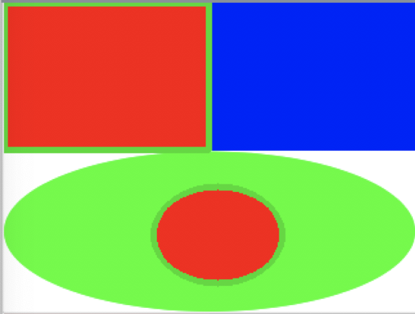
After being able to successfully create masks and find the contours of an image with a limited amount of colors, we then expanded the amount of HSV color ranges to include more hues in the spectrum with a larger range of S and V values. For guidance, we used a RapidTables color chart to create the HSV ranges (figure 5). Upon testing these ranges with different images, we expanded the HSV ranges to include lower S and V values, meaning that darker colors would be detected. Additionally, we expanded the hue values so that all colors would be represented in the thirteen ranges (see table 1).
Fig 5: Example of the preliminary color ranges for mask making 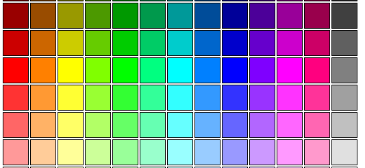
Table 1: Example of the preliminary color ranges for mask making 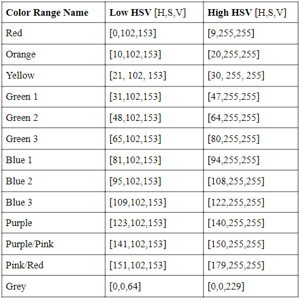
After the shapes were created and the outlines could be drawn on a blank for the user to see (fig 6), the next step was to allow the user to select and fill a shape with a color of their choice. We developed this part of the image processing before PiTFT implementation and therefore hard-coded the pixel that the user chose. In order to find which shape the chosen pixel was in, the image processing algorithm first checked the color value of that pixel in each of the binary mask images that corresponded to the 13 different color ranges (fig 7). In a mask, the shapes are represented by filled in white areas. A value of 255 corresponds to white and 0 corresponds to black. Once a value of 255 has been found in a color range mask, all of the contours found in the color range mask are drawn and filled in separately on blank images using cv2.drawContours() with the thickness set to -1. Since this drawing occurs on a BGR image, a mask of each of the filled in shapes had to be made to search a binary image (fig 8). After each of the shapes were separated and masks were made, the chosen shape can be found by checking the value of the pixel in each of the shape mask images. Once a value of 255 was found, the corresponding shape was found as well (fig 8).
Fig 6: Contours Drawn on Blank Canvas 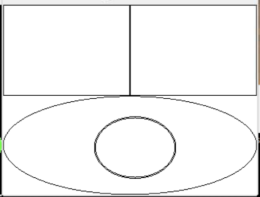
Fig 7: Depiction of checking the value of the pixel outlined in red in 3 of the 13 color range masks 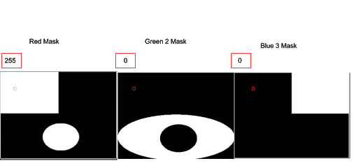
Fig 8: a) The first shape from the red mask contours list filled in. b) binary mask image of (a) 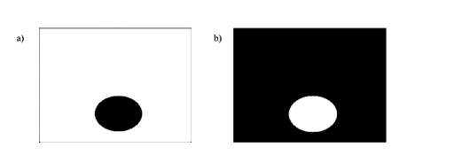
Fig 9: Red Color Range Shape Masks with a depiction of checking the pixel value to determine the chosen shape 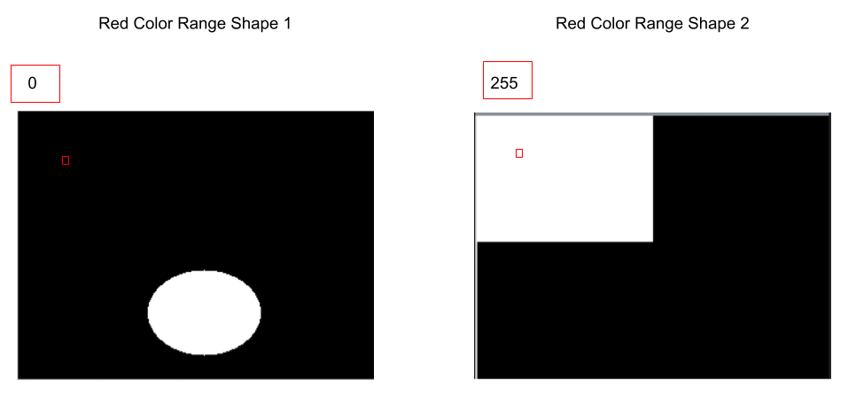
After the chosen shape was determined, the shape could then be colored on the blank image with the shape outlines using cv2.drawContours() with a chosen color and the thickness set to -1 to fill in the shape (fig 10).
Fig 10: The chosen shape colored in a hard-coded yellow 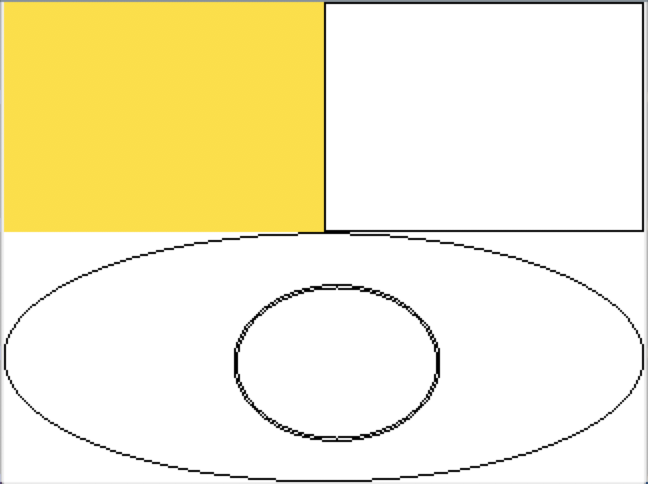
One of the largest challenges that we faced in the image processing was separating the contours. This challenge came from a lack of documentation of the data types used in some of the python openCV functions. As mentioned previously, we were able to debug our program by looking at the C++ function calls and argument types instead of the python version in the documentation. Using this knowledge, we learned that in order to separate the contours to be drawn using drawContours(), you had to pass the single contour inside of an array. For example, if you want the first shape inside the contours list named mycontours, you must use pass in [mycontours[0]] as the contours argument in order for the data type to be an array of arrays. Throughout the image processing section, we debugged by displaying images using cv2.imshow().
The image processing steps are based on openCV, and we tested and filled in different color cells using hard-coded pixel inputs. In order to implement direct user interaction with our Color By Numbers game, we introduce PyGame and PiTFT elements.
The program is organized by a set of state variables that toggle on and off depending on which screen needs to be shown. At startup, PyGame is initialized using pygame.init(), and the my_buttons dictionary containing the mode options ‘Color By Numbers’ and ‘Free Play’ are displayed (figure 11). The state variable start_screen is initialized to True, so the first screen tap will be used to determine which mode is chosen. If the user taps the top of the screen (Ycoord<120), they enter the Color By Numbers mode, and the flag variable normal_play is set True and free_play is set False. If the user taps the bottom of the screen (Ycoord>=120), the opposite occurs and free_play is set True while normal_play is set False. This choice determines the coloring mode that the game will begin in. However, this mode can be changed during gameplay using GPIO buttons (which will be elaborated upon later).
Fig 11: Initial menu screen to choose game mode. 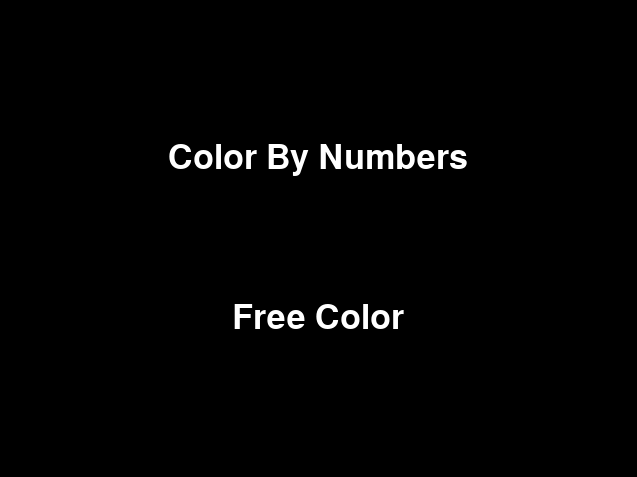
At this point, start_screen is toggled to False, and since new_mode is initialized to False (new_mode is a flag variable used when a GPIO button is pressed), pick_image_screen is set True, and the 4 image options are displayed in a 2x2 grid (figure 12). Whichever quadrant the next screen tap occurs in correlates to the respective picture; the user taps the image they would like to color. Once this screentap occurs, the chosen image is reloaded into PyGame in the full screen size, and the function imageProcessing() is called to make the color masks and contours that were elaborated on earlier.
Fig 12: Image selection screen. 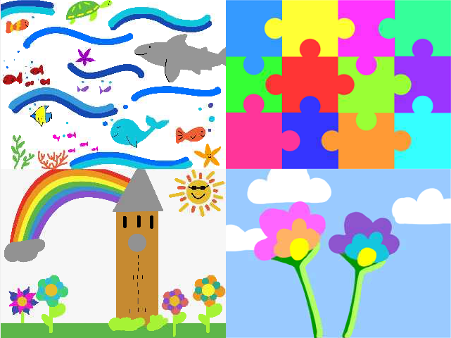
Now that the image is chosen, ‘pick_image_screen’ is toggled to False, and the next screen displayed is the canvas with drawn contours. Since ‘canvas_screen’ was initialized to True, the next screen tap corresponds to which cell the user wants to color in. The program checks the coordinate of the screen tap and compares it to the associated color masks to find the shape that pixel belongs to, and then displays color range choices based on the game mode.
The color selection screens are determined by the mode chosen. If the Color By Numbers mode was selected (thus, the ‘normal_play’ flag is set True), the color gradient corresponding to the range of the original color of that cell is displayed, and the user can tap which version of that color they want. Color gradient images were made using the 13 defined color ranges. For example, if in the original image a cell appeared yellow, the yellow gradient would be displayed, and the user would tap on which shade of yellow they would like to color the cell. If the Free Play mode was selected (thus, the ‘free_play’ flag is set True), the ‘found_shape’ variable is set True. If both ‘found_shape’ and ‘free_play’ are set true, the state variable ‘hue_screen’ is set True, and a color gradient displaying all possible hues is displayed. From this screen, the user can tap on which range they would like to see more options of. In order to save the hsv value of this pixel tap, we use:
hue = all_colors[Ycoord,Xcoord]
hue_int =np.uint8([[[int(hue[0]),int(hue[1]),int(hue[2])]]])
hsv_hue = cv2.cvtColor(hue_int,cv2.COLOR_BGR2HSV)
These new color variables are needed so that the shape mask can be found based on the original color of the shape, but it can be colored in whatever color the user specifies. After this tap, a gradient of that range will be displayed, based on the color of the pixel tapped on. From this screen, the user chooses what color they would like to color the cell. Once a color has been selected and the color cell is filled in, ‘canvas_screen’ is toggled to True, and found_shape is toggled to False. Then, the pattern is ready to be repeated as the contours are displayed and the program is waiting for a screen tap of the next shape to color in. Example color gradient screens are shown in figure 13.
Fig 13: (a)Color gradient of all possible hues. (b) (c)example gradients (yellow and green) 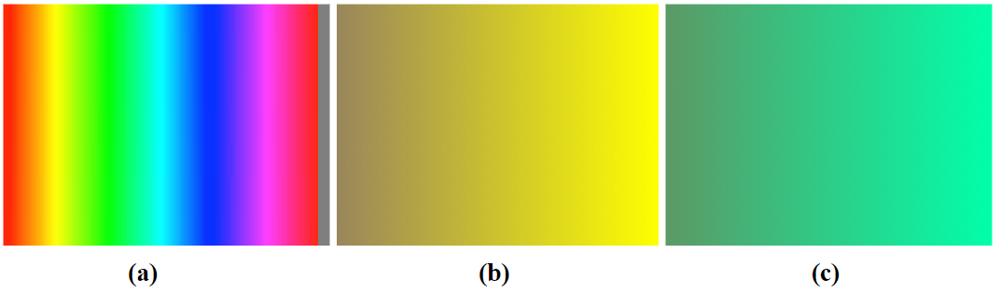
We also wanted to provide more options to interact with the game, and to be able change the options selected in the startup screens during gameplay. We chose GPIO buttons instead of screen taps to facilitate this interaction in order to make sure the image could be displayed on the screen at the highest possible resolution. Three GPIO buttons and corresponding callback functions were added.
Quit Button: GPIO27 A press of the button at GPIO27 sets the global ‘code_run’ variable to False, which will end the main while loop. The program then calls GPIO.cleanup() to reset all GPIO ports used.
Display original image: GPIO23 A press of the button at GPIO23 first toggles the draw_screen variable. If this variable is now False, the program will display the original picture (figure 14). This can be a helpful feature for users trying to recreate the colors of the original image. If the draw_screen variable is now True, the display will switch back to the contour display.
Fig 13: (a) Partially colored image (b) Display after button at GPIO23 is pressed 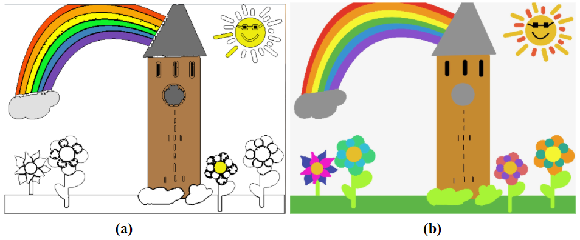
results
conclusion
conclusion
conclusion
conclusion